Deploying mapping services on AWS
What we will cover
- Amazon Web Service basic concepts
- Amazon Web Service tools
- Deploying map services on AWS
- Building a custom Amazon Machine Image (AMI)
- Configuring and deploying a load balance cluster
Key Concepts
- Availability Zone
- Region
- Access Identifiers
- Amazon Machine Image
- Elastic IP Address
- Security Group
- Access Control List
Key Concepts
Availability Zones
An Availability Zone is a set of locations within an AWS Region. Each zone is independent from other zones to protect from failure.
The Region name is part of the zone name, eg:
us-east-1d
This is one of the four zones in the us-east-1 Region
The mapping of a zone name to a location is different and consistent for each AWS account. This means that we maybe both be in zone us-east-1d but they maybe in different locations.
Key Concepts
Region
A Region is a set of Availability Zones in a geographic area. The AWS Region name generally indicates the area that is covered. The curent regions are:
- eu-west-1 ec2.eu-west-1.amazonaws.com is in Ireland
- us-east-1 ec2.us-east-1.amazonaws.com is in Virginia
- ap-northeast-1 ec2.ap-northeast-1.amazonaws.com is in Japan
- us-west-1 ec2.us-west-1.amazonaws.com is in California
- ap-southeast-1 ec2.ap-southeast-1.amazonaws.com Singapore
Key Concepts
Access Identifiers
Access identifiers are used to identify accounts and create a signature for each request made.
Indentifiers use public key encryption which come in pairs. The first part is public and identifies a single AWS account. The second part is private and used to create a signature for each request.
AWS provide two different sets of acces identifiers. The first is an Access Key ID and a Secret Access Key. The second set is a X.509 certificate with public and private keys.
In practice you will need your public key and the X.509 certificate to perform most AWS tasks.
More information on access and identity management on Amazon
Key Concepts
Amazon Machine Image (AMI)
Amazon Machine Image is a virtual instance of a server. It contains the operating system and software that comprise you application(s).
You can use a pre-built AMI, customize it, and create a new AMI based on your changes
Each AMI has a unique id, eg: ami-63be790a
The AWS AMU catalog contains a complete list of public and registered AMIs.
Key Concepts
Instance
An instance is a running copy of an AMI. You can launch multiple instances of the same AMI. They can be managed through the command-line or using the AWS Management Console through a web browser.
More info on instance types on Amazon
Key Concepts
Elastic IP Address
AWS allocates fixed static addresses to each instance. They are Elastic because you can allocate, attach, detach and free addresses as needed
There is a limit of 5 Elastic IP Addresses per user
More info at AWS Feature Guide
Key Concepts
Security Group
A security group is the allowable set of inbound network connection for an instance. Each group has a unique name and lists the protocols, ports, and IP address ranges that are allowed.
A single group can be applied to multiple instances and multiple groups can be applied to single instance.
Security groups typically permit access to ports 22 and 80 for access to ssh and a webserver. Additional ports can be added to the security group such as port 8080 for apache-tomcat or 5432 for postgres. In addition to adding these ports to a security group, the application will also have to be configured to accept external requests as needed.
More information in security groups are on Amazon
Key Concepts
Access Control List
An Access Control List (ACL) specifies permissions for buckets and objects. Every bucket and object has an ACL that defines which AWS accounts and groups that can access the object.
ACLs can be manage through the AWS Management Console or through a third party application such as S3Fox
AWS Basics
Building Blocks
- Simple Storage Service (S3)
- Elastic Block Store (EBS)
- Elastic Compute Cloud (EC2)
- Elastic Load Balancer
- CloudWatch and Auto Scaling
Building Blocks
Simple Storage Service
S3 is used to store binary data objects for private or public use. It is fault tolerant, assumes that hardware failure is common, and makes multiple copies to achieve high availability and durability.
All objects reside in buckets and any single object has a 5gb limit. You can have as many objects in a single bucket as needed
An S3 account can have 100 buckets.
You must have a globally unique bucket name and a key unique to that
bucket. For example:
http://my_awesome_mapserver.s3.amazonaws.com/hurricane_irene.tiff
S3 is the place to store static files such as static pages, javascript, imagery, and other media files.
S3 charges are based on amount of data stored, amount of data transfered in and out, and the number of requests made
Building Blocks
Elastic Block Store (EBS)
An Elastic Block Store is a disk volume. You can attach it to any running instance in the same Availability Zone.
Volumes are independent of any instance, that means they persist when an instance is shutdown or terminated
EVS volumes are useful for storing application data such as database tables.
Priced at a rate of $0.10 per allocated GB per month Amazon EBS also charges $0.10 per 1 million I/O requests.
Building Blocks
Elastic Compute Cloud - Standard
EC2 is the infrastructure underlaying the ability to lauch Amazon Machine Instances
There are instances to meet the majority of needs through providing a range of memory, processing power and local disk storage
- Standard Instances have memory to CPU ratios suitable for most
general purpose applications;
- High-Memory instances offer larger memory sizes for high throughput applications, including database and memory caching applications
- High-CPU instances have proportionally more CPU resources than memory (RAM) and are well suited for compute-intensive applications.
Building Blocks
Elastic Compute Cloud - Micro
- Micro instances provide a small amount of consistent CPU resources and allow you to burst CPU capacity when additional cycles are available. They are well suited for lower throughput applications and web sites that consume significant compute cycles periodically.
- At steady state, Micro instances receive a fraction of the compute resources that Small instances do. Therefore, if your application has compute-intensive or steady state needs, a Small instance (or larger, depending on your needs) is recommended.
- However, Micro instances can periodically burst up to 2 ECUs (for short periods of time). This is double the number of ECUs available from a Standard Small instance. Therefore, if you have a relatively low throughput application or web site with an occasional need to consume significant compute cycles using Micro instances is recommended.
Building Blocks
Elastic Compute Cloud - Other
- Cluster Compute instances provide a very large amount of CPU coupled with increased network performance making them well suited for High Performance Compute (HPC) applications and other demanding network-bound applications.
- Cluster GPU instances provide general-purpose graphics processing units (GPUs) with proportionally high CPU and increased network performance making them well suited for applications benefitting from highly parallelized processing, including HPC, rendering and media processing applications.
Building Blocks
Elastic Load Balancer
The Elastic Load Balancer distributes traffic across EC2 instances.
Instances can be in the same Availability Zone or scattered across several zones in a Region
The Load Balancer checks the health of instances it manages and stops sending traffic to unhealthy or non-responsive instances
The Load Balancer works well with stateless applications, such as OGC Web Services or RESTful APIs
Building Blocks
Cloud Watch and Auto Scaling
CloudWatch is a feature that provides monitoring within EC2 by collecting and storing performance information such as
- CPU load average
- disk I/O rate
- network I/O rate
Auto Scaling uses the data collected by CloudWatch to add instances as demand increases and terminate them as demand decreases within an auto scaling group
You can set triggers for adding or decreasing the number of instances by using Auto Scaling
Break
Question and Answer

Amazon Web Service Tools
Exercise 1: Creating Security Crendentials
PURPOSE: We will generate public and private keys for managing AWS components from the command line.
- Log into the AWS Web Site.
- Click on Your Account and select Security Credentials
- Click the X.509 Certificates tab
Amazon Web Service Tools
Exercise 1: Creating Security Crendentials (cont.)
- Make a directory called 'ec2' in your home directory
- Click Create a New Certificate and download the certificate and private key files
Amazon Web Service Tools
Exercise 2: Generate keypair using AWS Console
PURPOSE: Keypairs are needed to launch and log into instances.
- Log into the AWS Management Console and click on the Amazon EC2 tab.
- Click on Key Pairs in the Navigation pane on the left.
Amazon Web Service Tools
Exercise 2: Generate keypair using AWS Console (cont.)
- Click on Create Key Pair, enter a name, and click Create
- The key pair will be downloaded automatically, move to your ec2 directory.
- On Unix based systems, change permissions to 600
| 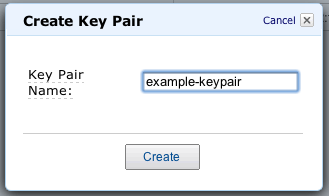 | 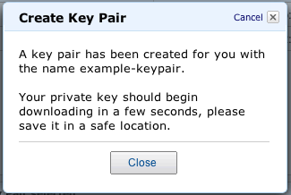 |
Amazon Web Service Tools
Exercise 3: Creating a Security Group
- Select Security Groups
- Select Default Rule
- Create a new rule
- Set port range (8080)
- Click Add Rule
Amazon Web Service Tools
Exercise 3: Creating a Security Group
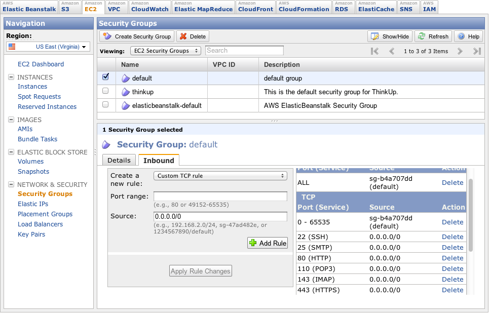Amazon Web Service Tools
Exercise 4: Launching an EC2 instance
- Log in the AWS Management Console and click the Amazon EC2 tab.
- Click on AMIs in the Navigation side menu.
- In the Amazon Machine Images pane, select Public Images and All Platforms in the drop down menus.
- Copy and paste the Ubuntu 10.04 LTS Lucid EBS boot AMI: ami-63be790a
Amazon Web Service Tools
Exercise 4: Launching an EC2 instance (cont.)
- To launch the instance, select the check box and click on the Launch button.
Amazon Web Service Tools
Exercise 4: Launching an EC2 instance (cont.)
- Enter 1 in the Number of Instances field.
- Select the m1.small Instance Type option.
- Select the Availability Zone
Amazon Web Service Tools
Exercise 4: Launching an EC2 instance (cont.)
- Review selected options.
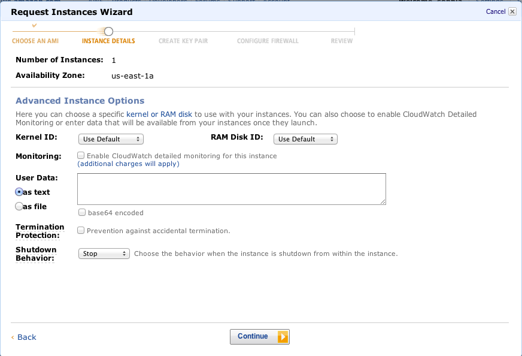
Amazon Web Service Tools
Exercise 4: Launching an EC2 instance (cont.)
- Name the instance
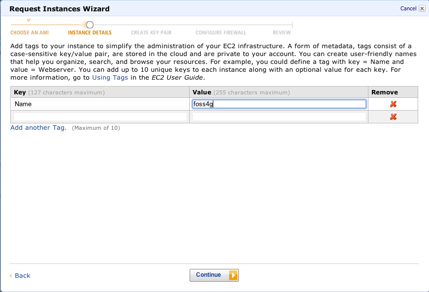
Amazon Web Service Tools
Exercise 4: Launching an EC2 instance (cont.)
- Select keypair to use with the instance, you will use this to login
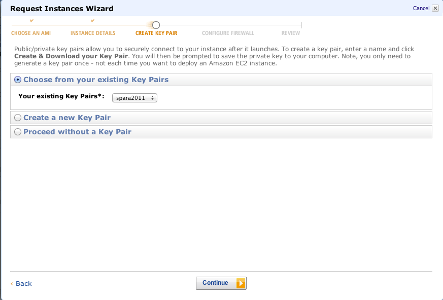
Amazon Web Service Tools
Exercise 4: Launching an EC2 instance (cont.)
- Select the Security Group
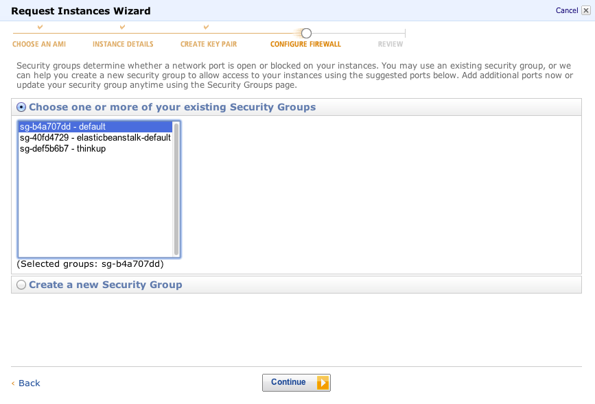
Amazon Web Service Tools
Exercise 4: Launching an EC2 instance (cont.)
- Launch the instance
Break
Question and Answer
Deploying Mapping Services
Intro
Using geoserver as an example, but can be any map or data service
We will make heavy use of bash scripting, but can be in any scripting language
Goal is to automate the build out of servers
Deploying Mapping Services
Setting up the environment
# add ubuntu repos and update
sudo sh -c "echo ' ' >> /etc/apt/sources.list"
sudo sh -c "echo 'deb http://us.archive.ubuntu.com/ubuntu/ lucid multiverse' >> /etc/apt/sources.list"
sudo sh -c "echo 'deb-src http://us.archive.ubuntu.com/ubuntu/ lucid multiverse' >> /etc/apt/sources.list"
sudo sh -c "echo 'deb http://us.archive.ubuntu.com/ubuntu/ lucid-updates multiverse' >> /etc/apt/sources.list"
sudo sh -c "echo 'deb-src http://us.archive.ubuntu.com/ubuntu/ lucid-updates multiverse' >> /etc/apt/sources.list"
sudo sh -c "echo 'deb http://archive.canonical.com/ lucid partner' >> /etc/apt/sources.list"
sudo apt-get update
Deploying Mapping Services
Install and configure Java
# magic! installs java without physically accepting license
echo "sun-java6-jdk shared/accepted-sun-dlj-v1-1 boolean true" | sudo -E debconf-set-selections
# install Oracle Java
sudo apt-get -y install sun-java6-bin
# set java paths
sudo touch /etc/profile.d/java.sh
sudo sh -c "echo 'export JAVA_HOME=/usr/lib/jvm/java-6-sun' >> /etc/profile.d/java.sh"
sudo sh -c "echo 'export PATH=$PATH:$JAVA_HOME/bin' >> /etc/profile.d/java.sh"
sudo source /etc/profile.d/java.sh
export JAVA_HOME=/usr/lib/jvm/java-6-sun
export PATH=$PATH:$JAVA_HOME/bin
Deploying Mapping Services
Install and configure Apache and Tomcat
#install and configure tomcat6
sudo apt-get install -y tomcat6
sudo chgrp -R tomcat6 /etc/tomcat6
sudo chmod -R g+w /etc/tomcat6
# install and configure apache
sudo apt-get install -y apache2
sudo ln -s /etc/apache2/mods-available/proxy.conf /etc/apache2/mods-enabled/proxy.conf
sudo ln -s /etc/apache2/mods-available/proxy.load /etc/apache2/mods-enabled/proxy.load
sudo ln -s /etc/apache2/mods-available/proxy_http.load /etc/apache2/mods-enabled/proxy_http.load
Deploying Mapping Services
Configure Tomcat proxy
#add tomcat proxy
sudo chmod 666 /etc/apache2/sites-available/default
sudo sed -i '$d' /etc/apache2/sites-available/default
sudo sh -c "echo ' ' >> /etc/apache2/sites-available/default"
sudo sh -c "echo 'ProxyRequests Off' >> /etc/apache2/sites-available/default"
sudo sh -c "echo '# Remember to turn the next line off if you are proxying to a NameVirtualHost' >> /etc/apache2/sites-available/default"
sudo sh -c "echo 'ProxyPreserveHost On' >> /etc/apache2/sites-available/default"
sudo sh -c "echo ' ' >> /etc/apache2/sites-available/default"
sudo sh -c "echo '' >> /etc/apache2/sites-available/default"
sudo sh -c "echo ' Order deny,allow' >> /etc/apache2/sites-available/default"
sudo sh -c "echo ' Allow from all' >> /etc/apache2/sites-available/default"
sudo sh -c "echo ' ' >> /etc/apache2/sites-available/default"
sudo sh -c "echo ' ' >> /etc/apache2/sites-available/default"
sudo sh -c "echo 'ProxyPass /geoserver http://localhost:8080/geoserver' >> /etc/apache2/sites-available/default"
sudo sh -c "echo 'ProxyPassReverse /geoserver http://localhost:8080/geoserver' >> /etc/apache2/sites-available/default"
sudo sh -c "echo ' ' >> /etc/apache2/sites-available/default"
sudo sh -c "echo '' >> /etc/apache2/sites-available/default"
sudo chmod 644 /etc/apache2/sites-available/default
Deploying Mapping Services
Installing Geoserver
# get geoserver, change to version you want
sudo service tomcat6 stop
sudo apt-get -y install curl
sudo apt-get -y install unzip
curl -L http://downloads.sourceforge.net/geoserver/geoserver-2.1.1-war.zip -o geoserver-2.1.1-war.zip
sudo unzip -d /var/lib/tomcat6/webapps/ geoserver-2.1.1-war.zip
sudo chown -R tomcat6 /var/lib/tomcat6/webapps/geoserver.war
sudo chgrp g+w tomcat6 /var/lib/tomcat6/webapps/geoserver.war
# restart
sudo service tomcat6 restart
sudo service apache2 restart
# echo message
addy=$(GET http://169.254.169.254/latest/meta-data/public-hostname)
echo " "
echo "Geoserver is available at: http://$addy/geoserver"
Deploying Mapping Services
Installing PostgreSQL and PostGIS
Installing PostgreSQL/PostGIS is optional
This section creates a RAID 10 using EBS Volumes and installs PostgreSQL
and PostGIS from source.
Major props to Simon Tokumine (@tokumin) who wrote the original script
Deploying Mapping Services
Setup
# change this to you keypair and cert
export EC2_PRIVATE_KEY=[pk.pem]
export EC2_CERT=[cert.pem]
# change this to your instance
instanceid=$(GET http://169.254.169.254/latest/meta-data/instance-id)
# change to the instance's availability zone
availability_zone=$(GET http://169.254.169.254/latest/meta-data/placement/availability-zone)
Deploying Mapping Services
Setup
# builds out RAID10, so size of RAID=volumes*size/2
volumes=$1
size=$2
# change to your mount point
mountpoint=/mnt/vol1
# change to a device
raid_array_location=/dev/md0
raid_level=10
raid_layout=f2
raid_chunk=256
postgres_password=postgres
# create a postgis template
db_name=template_postgis
Deploying Mapping Services
Create EBS Volumes
# install ec2 tools
sudo apt-get -y install ec2-api-tools
# create EBS volumes
devices=$(perl -e 'for$i("h".."k"){for$j("",1..15){print"/dev/sd$i$j\n"}}'|
head -$volumes)
devicearray=($devices)
volumeids=
i=1
while [ $i -le $volumes ]; do
volumeid=$(ec2-create-volume -z $availability_zone --size $size | cut -f2)
echo "$i: created $volumeid"
device=${devicearray[$(($i-1))]}
echo $volumeid
ec2-attach-volume $volumeid -i $instanceid -d $device
volumeids="$volumeids $volumeid"
let i=i+1
done
echo "volumeids='$volumeids'"
Deploying Mapping Services
Create EBS Volumes
# install mdadm - software raid utility
sudo apt-get update
echo "postfix postfix/main_mailer_type select No configuration" | sudo -E debconf-set-selections
sudo apt-get install -y mdadm xfsprogs
# get list of devices
devices=$(perl -e 'for$i("h".."k"){for$j("",1..15){print"/dev/sd$i$j\n"}}'|
head -$volumes)
Deploying Mapping Services
Create RAID 10
#builds out RAID10
yes | sudo mdadm \
--create $raid_array_location \
--chunk=$raid_chunk \
--level=$raid_level \
--layout=$raid_layout \
--metadata=1.1 \
--raid-devices $volumes \
$devices
echo DEVICE $devices | sudo tee /etc/mdadm.conf
sudo mdadm --detail --scan | sudo tee -a /etc/mdadm.conf
# create xfs file system on RAID 10
sudo mkfs.xfs $raid_array_location
# add to fstab, create mountpoint and mount it
echo "$raid_array_location $mountpoint xfs noatime 0 0" | sudo tee -a /etc/fstab
sudo mkdir $mountpoint
sudo mount $mountpoint
Deploying Mapping Services
Install PostgeSQL on RAID
# install PostgreSQL
sudo apt-get -y install libxml2-dev
sudo apt-get -y install postgresql-8.4 postgresql-server-dev-8.4 postgresql-contrib-8.4 libpq-dev
sudo /etc/init.d/postgresql-8.4 stop
# move data director to RAID
sudo mkdir $mountpoint/data
sudo chmod -R 700 $mountpoint/data
sudo chown -R postgres.postgres $mountpoint/data
sudo -u postgres /usr/lib/postgresql/8.4/bin/initdb -D $mountpoint/data
sudo sed -i.bak -e 's/port = 5433/port = 5432/' /etc/postgresql/8.4/main/postgresql.conf
sudo sed -i.bak -e "s@\/var\/lib\/postgresql\/8.4\/main@$mountpoint\/data@" /etc/postgresql/8.4/main/postgresql.conf
sudo sed -i.bak -e 's/ssl = true/#ssl = true/' /etc/postgresql/8.4/main/postgresql.conf
sudo /etc/init.d/postgresql start
Deploying Mapping Services
More setup, install utilities
cd /tmp
sudo apt-get -y install bzip2
sudo apt-get -y install g++
sudo apt-get -y install checkinstall
Deploying Mapping Services
Install GEOS
wget http://download.osgeo.org/geos/geos-3.2.2.tar.bz2
bunzip2 geos-3.2.2.tar.bz2
tar xvf geos-3.2.2.tar
sudo chown -R ubuntu.ubuntu /tmp/geos-3.2.2
cd geos-3.2.2
./configure
make
sudo make install
Deploying Mapping Services
Install Proj4
cd ../
wget http://download.osgeo.org/proj/proj-4.7.0.tar.gz
tar xvfz proj-4.7.0.tar.gz
cd proj-4.7.0
./configure
make
sudo make install
cd ../
Deploying Mapping Services
Install PostGIS
# install postgis
wget http://postgis.refractions.net/download/postgis-1.5.3.tar.gz
tar xvfz postgis-1.5.3.tar.gz
cd postgis-1.5.3
./configure
make
sudo make install
sudo /sbin/ldconfig
# config template_postgis
sudo -u postgres psql -c"ALTER user postgres WITH PASSWORD '$postgres_password'"
sudo -u postgres createdb $db_name
sudo -u postgres createlang -d$db_name plpgsql
sudo -u postgres psql -d$db_name -f /usr/share/postgresql/8.4/contrib/postgis-1.5/postgis.sql
sudo -u postgres psql -d$db_name -f /usr/share/postgresql/8.4/contrib/postgis-1.5/spatial_ref_sys.sql
sudo -u postgres psql -d$db_name -c"select postgis_lib_version();"
Break
Question and Answer
Deploying Map Services
Exercise: Housekeeping
Download putty (ssh for windows)from here: http://www.chiark.greenend.org.uk/~sgtatham/putty/download.html
Get this version: putty-0.61-installer.exe
Download pscp (scp for windows)
Get this version: pscp.exe
Deploying Map Services
Exercise: Housekeeping
Putty (ssh for windows) requires a different certificate. We will use puttygen to create it.
Load your private key: File > Load
Click OK
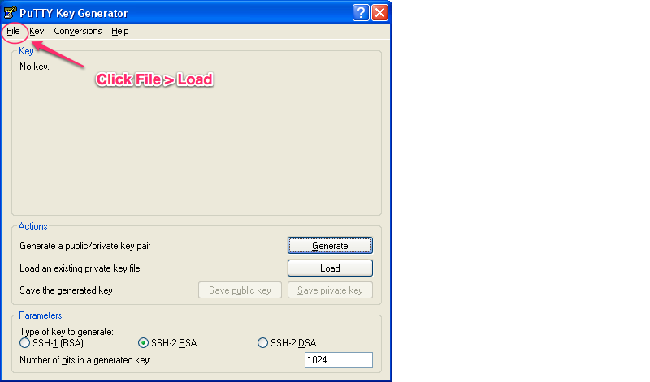Deploying Map Services
Exercise: Creating Certificates (cont)
Click Save Private Key
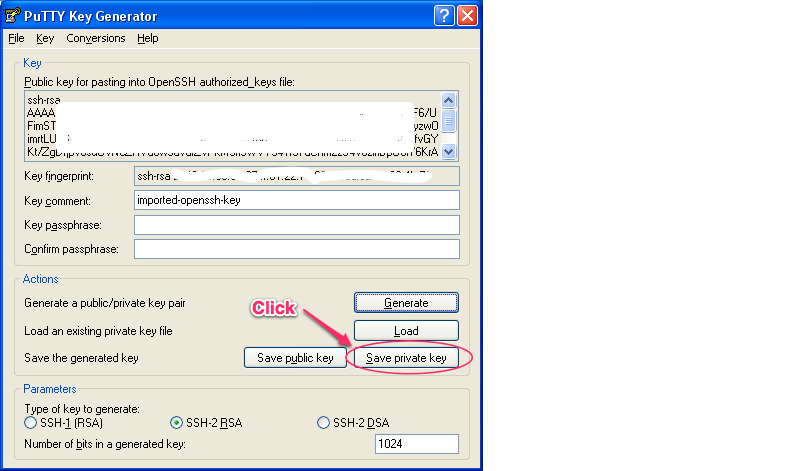Deploying Map Services
Exercise: Creating Certificates
Putty (ssh for windows) requires a different certificate. We will use puttygen to create it.
Load your private key: File > Load
Click OK
Deploying Map Services
Exercise: Creating Certificates (cont)
Click Save Private Key
Deploying Map Services
Exercise: Creating Certificates (cont)
Click Yes when PuTTYgen prompts you about saving the key without a passphrase.
Save the key as <keyname>.ppk
Deploying Map Services
Exercise: Creating Certificates (cont.)
Click Yes when PuTTYgen prompts you about saving the key without a passphrase.
Save the key as <keyname>.ppk
Deploying Map Services
Exercise: Logging in (cont.)
Launch Putty to open an SSH session. Expand connection, SSH, and select Auth. Click the browse button next to the Private key file for authentication: field, and select the .PPK file you just created with Puttygen.
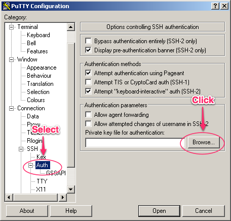Deploying Map Services
Exercise: Logging in (cont.)
Select Session > Enter the instance address > Click Open
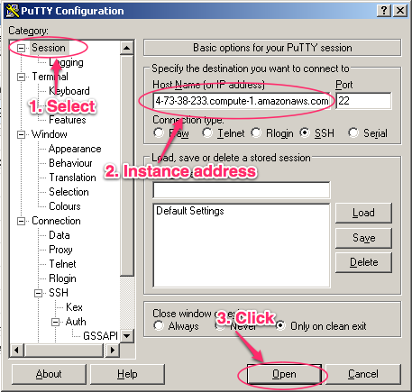Deploying Map Services
Exercise: Logging in (cont.)
Login as ubuntu
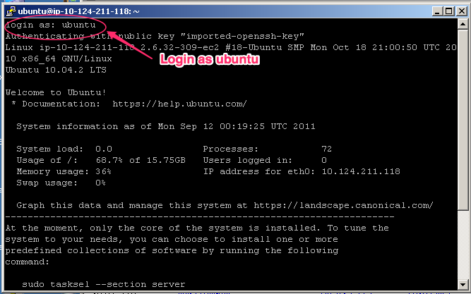Deploying Map Services
Exercise: Installing Geoserver
wget https://raw.github.com/spara/aws_foss4g_2011/master/workshop/aws_scripts/geoserver-ubuntu-aws-install.sh chmod 755 geoserver-ubuntu-aws-install.sh ./geoserver-ubuntu-aws-install.sh
Deploying Map Services
Optional Exercise: Installing Postgres/PostGIS
wget https://raw.github.com/spara/aws_foss4g_2011/master/workshop/aws_scripts/postgres_postgis_aws_install.sh chmod 755 postgres_postgis_aws_install.sh ./postgres_postgis_aws_install.sh
Break
Question and Answer

Building an Amazon Machine Image
Exercise: Create image
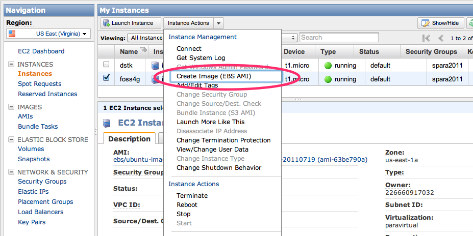Building an Amazon Machine Image
Exercise: Create image
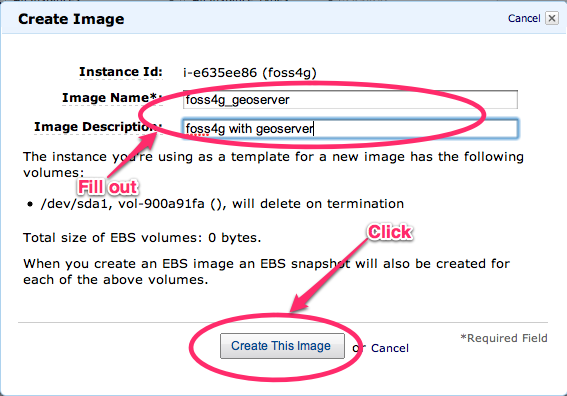Building an Amazon Machine Image
Exercise: Create image
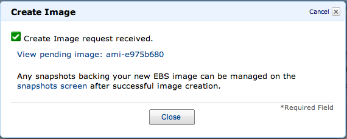Building an Amazon Machine Image
Exercise: Launch image
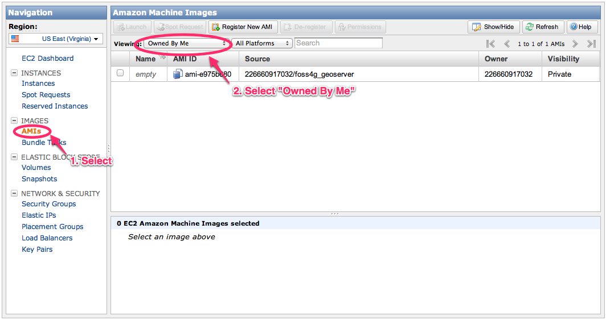Building an Elastic Load Balancer
Exercise: Create load balancer
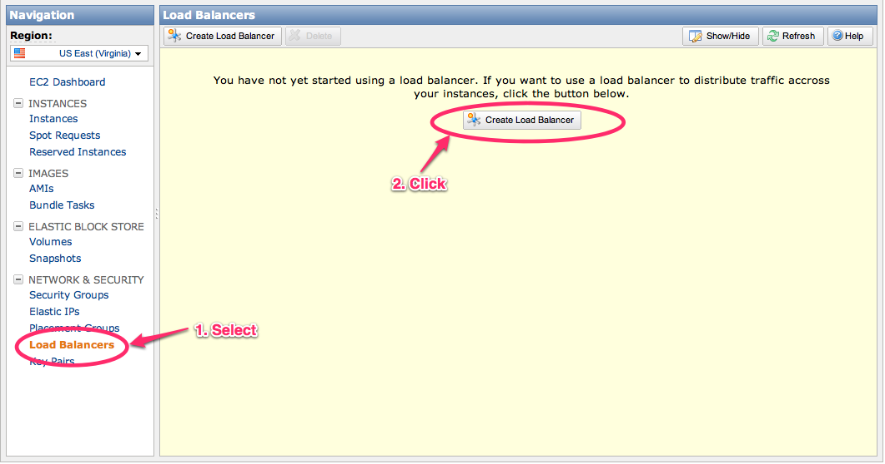Building an Elastic Load Balancer
Exercise: Create load balancer
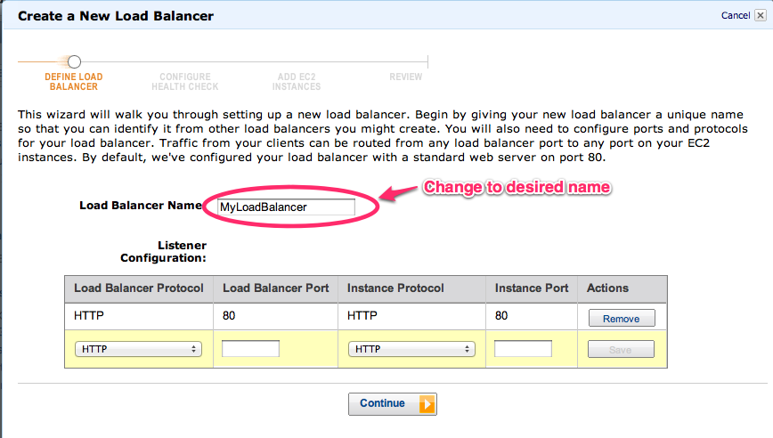Building an Elastic Load Balancer
Exercise: Create load balancer
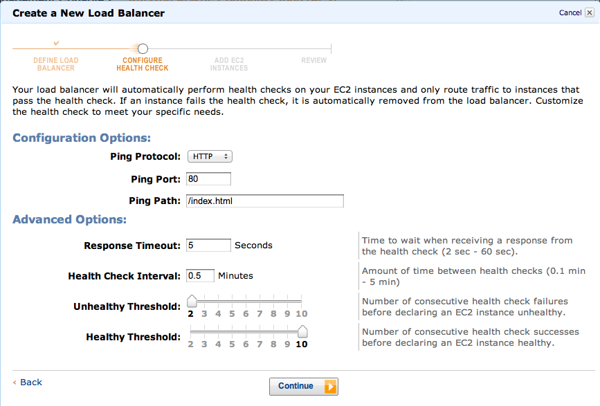Building an Elastic Load Balancer
Exercise: Create load balancer
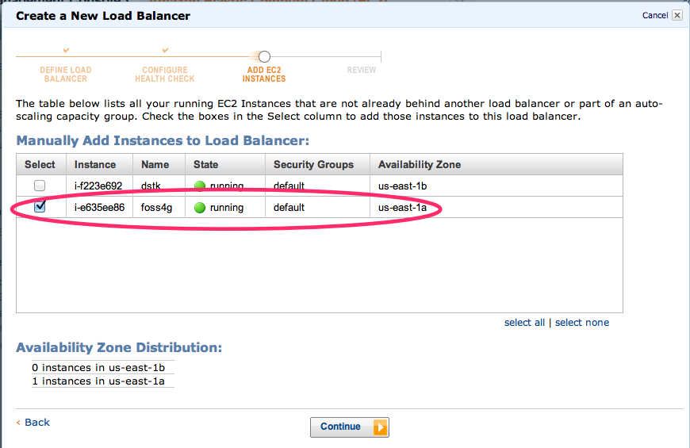Building an Elastic Load Balancer
Exercise: Create load balancer
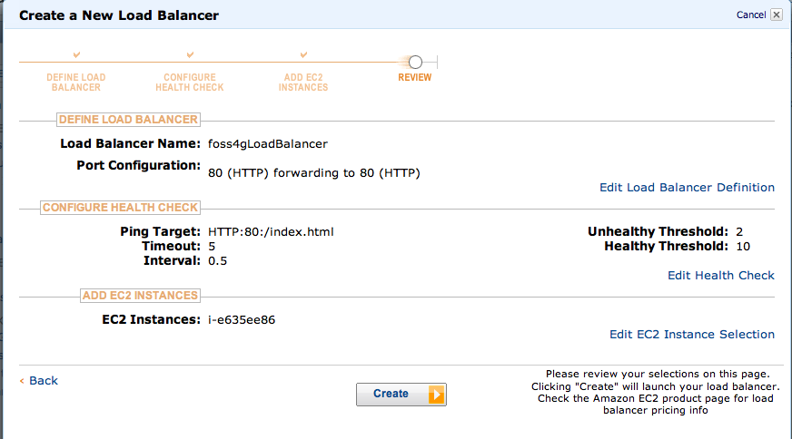Building an Elastic Load Balancer
Exercise: Create load balancer
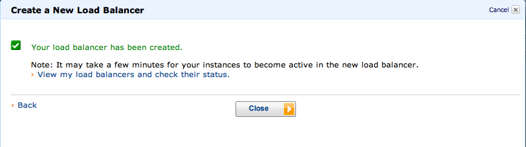Building an Elastic Load Balancer
Exercise: Create load balancer
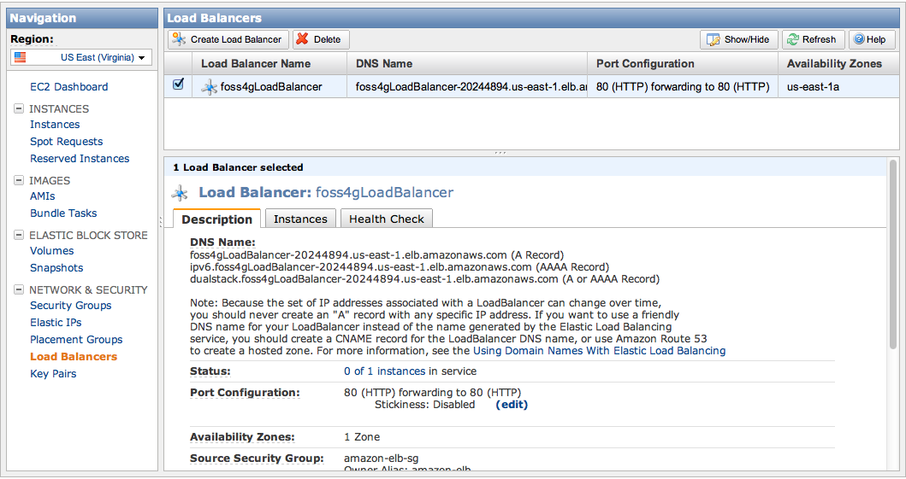Deploying Autoscaling
Exercise: Autoscaling setup
Currently there are only command-line tools, we will launch and AMI with the necessary tools in the AWS Console
Use this AMI: ami-9b8143f2
In windows, zip up your keys in the ec2 directory
copy your keys (private key and cert) to the AMI
pscp -i ec2/[your key] ec2.zip ubuntu@[your ami]
Deploying Autoscaling
Exercise: Autoscaling setup
Open a putty session after AMI is running
Login as ubuntu
Unzip ec2.zip:
unzip ec2.zip ec2
Deploying Autoscaling
Exercise: Create launch config and autoscaling group
as-create-launch-config asfoss4g --image-id ami-e975b680 \
--instance-type t1.micro \
--group default \
-K ~/ec2/pk-your_private_key.pem \
-C ~/ec2/cert-your_cert.pem
as-create-auto-scaling-group foss4ggroup \
--launch-configuration asfoss4g \
--availability-zones us-east-1a \
--min-size 3 \
--max-size 10 \
--load-balancers foss4gLoadBalancer \
-K ~/ec2/pk-your_private_key.pem \
-C ~/ec2/cert-/cert-your_cert.pem
Deploying Autoscaling
Exercise: Create scaling policy
as-put-scaling-policy ScaleUpPolicy \
--name "scale-up" \
--auto-scaling-group foss4ggroup \
--adjustment 1 \
--type Absolute \
--cooldown 300 \
-K ~/ec2/pk-your_private_key.pem \
-C ~/ec2/cert-/cert-your_cert.pem
as-put-scaling-policy ScaleDownPolicy \
--name "scale-down" \
--auto-scaling-group foss4ggroup \
--adjustment -1 \
--type Absolute \
--cooldown 300 \
-K ~/ec2/pk-your_private_key.pem \
-C ~/ec2/cert-/cert-your_cert.pem
Deploying Autoscaling
Exercise: Create alarms
exceeds 60% CPU utilization for 1 consecutive 10 min period
mon-put-metric-alarm HighCPUAlarm \
--comparison-operator GreaterThanThreshold \
--evaluation-periods 1 \
--metric-name CPUUtilization \
--namespace "AWS/EC2" \
--period 600 \
--statistic Average \
--threshold 60 \
--alarm-actions ScaleUpPolicy \
--dimensions "AutoScalingGroupName=foss4ggroup" \
-K ~/ec2/pk-your_private_key.pem \
-C ~/ec2/cert-/cert-your_cert.pem
Deploying Autoscaling
Exercise: Create alarms
less than 10% CPU utilization for 1 consecutive 10 min period
mon-put-metric-alarm LowCPUAlarm \
--comparison-operator LessThanThreshold \
--evaluation-periods 1 \
--metric-name CPUUtilization \
--namespace "AWS/EC2" \
--period 600 \
--statistic Average \
--threshold 10 \
--alarm-actions ScaleDownPolicy \
--dimensions "AutoScalingGroupName=foss4ggroup" \
-K ~/ec2/pk-your_private_key.pem \
-C ~/ec2/cert-/cert-your_cert.pem
Stopping Autoscaling
Exercise: Stop autoscaling
Stop alarms, clear policies, stop instances and groups
# replace with your cert and private key
mon-delete-alarms HighCPUAlarm LowCPUAlarm -K ec2/pk.pem -C ec2/cert.pem
as-update-auto-scaling-group foss4ggroup --min-size 0 --max-size 0 -K ec2/pk.pem -C ec2/cert.pem
# repeat describe until all instances are stopped
as-describe-auto-scaling-groups foss4ggroup -K ec2/pk.pem -C ec2/cert.pem
as-delete-auto-scaling-group foss4ggroup -K ec2/pk.pem -C ec2/cert.pem
as-delete-launch-config asfoss4g -K ec2/pk.pem -C ec2/cert.pem
That's all
Restful break credit goes to Maru the Cat.
Get it at github.
- Sophia Parafina / @spara / sophia.parafina@gmail.com